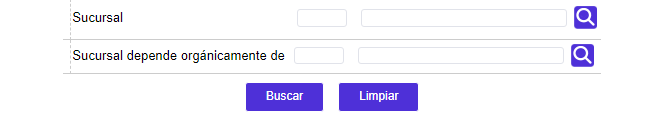
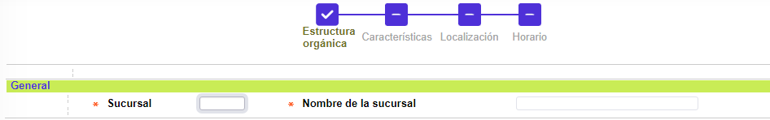
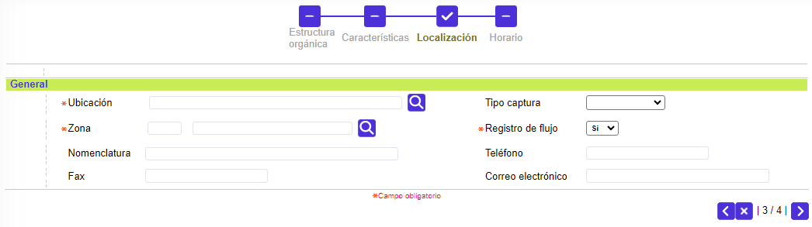
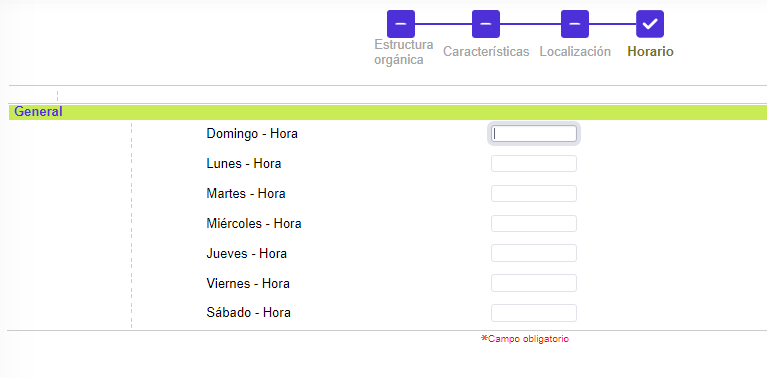
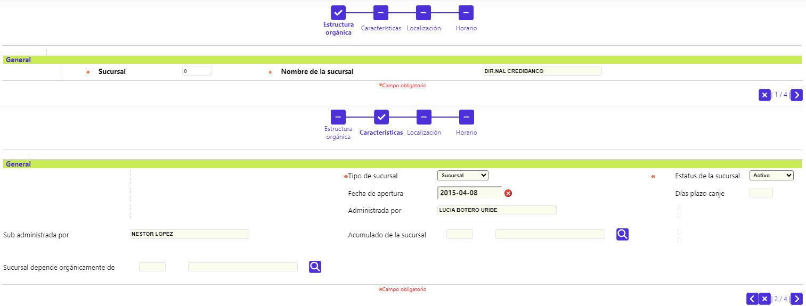
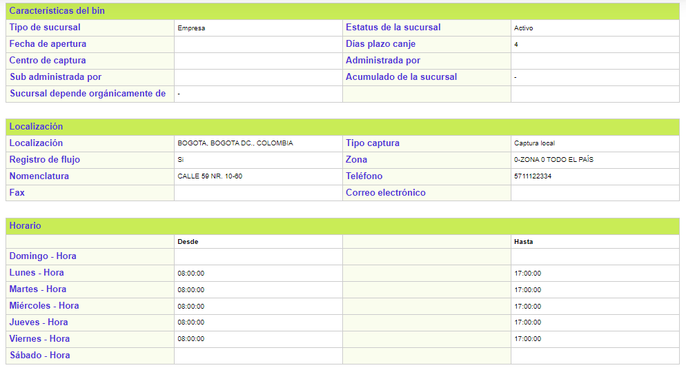
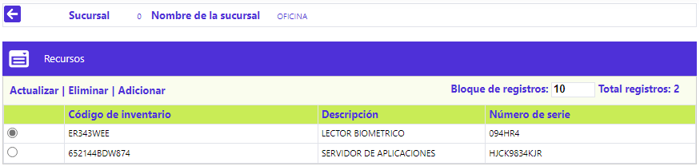
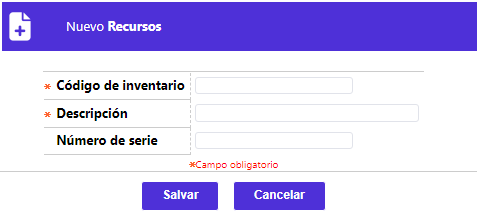
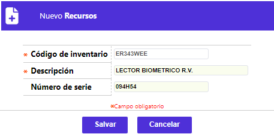

Estructura organizacional
Mediante esta función se habilita la consulta y mantenimiento de la tabla en la cual se almacena la información más relevante sobre la composición de la estructura orgánica de la entidad; se fundamenta en la jerarquía administrativa y/o funcional, descomponiéndose y recomponiéndose en cascada mediante los botones especiales y gracias a la flexibilidad de la forma, permite la inclusión de diversas clases de estructuras. La funcionalidad adicional de la forma se explica más adelante.
El formulario contiene las opciones Actualizar, Eliminar, Adicionar y Detalle. Adicionalmente, cuenta con un filtro de búsqueda y la opción Recursos en la parte superior.
Filtro: Se pueden realizar consultas a través de las siguientes opciones:

|
Sucursal |
Campo numérico con lista de valores de cuatro dígitos, en el cual se registra el código una dependencia de la entidad. |
|
Sucursal depende orgánicamente de |
Campo numérico con lista de valores de cuatro dígitos, en el cual se registra el código una dependencia de la entidad. |
Adicionar: Si el usuario invoca la opción Adicionar se despliega un wizard de cuatro pasos con los siguientes formulario.
General: En este conjunto de campos se registra la información básica de cada una de las sucursales definidas en el bloque anterior; los datos desplegados corresponden al registro sobre el cual se encuentre ubicado el cursor.

|
Sucursal |
Campo numérico de cuatro dígitos, obligatorio, en el cual se registra el código y a continuación el nombre asignado a cada dependencia de la entidad. La asignación de códigos debe ser ascendente y acorde a la jerarquía de la entidad y es indispensable incluir a la misma entidad con el código cero, puesto que la opción Calendario así lo requiere para poder heredar los días inhábiles y festivos, tanto de la entidad como de la corporación a la que pertenece la entidad, en caso de aplicar esta figura. |
|
Nombre de la sucursal |
Campo en el cual se registra el nombre asignado a cada dependencia de la entidad. |
El usuario tiene la opción de Cancelar o Avanzar al segundo paso del wizard a través de los botones ubicados en la parte inferior derecha del formulario.

|
Tipo de sucursal |
Campo que posee lista de valores adjunta de la cual se debe seleccionar el nivel o jerarquía administrativo/operativo que detenta la dependencia y que puede ser Agencia, Sucursal, Oficina, Empresa, Departamental o Regional. |
|
Estatus de la sucursal |
En este campo con lista de valores adjunta, se selecciona la condición actual de la dependencia que puede ser Activo, Inactivo o Suspensión. |
|
Fecha de apertura |
Campo en formato fecha DD/MM/YYYY, no obligatorio, que contiene la fecha en la cual ocurre la apertura oficial de la sucursal o dependencia. |
|
Días plazo canje |
Campo numérico de tres dígitos, no obligatorio en el que se registra el número máximo de días hábiles que requiere la operación del canje interbancario. Si la entidad determina que los pagos en cheque deben aplicar como si fuesen en efectivo, este campo deberá contener el valor de cero o uno, en todas las sucursales y oficinas habilitadas para la recepción de dichos pagos. |
|
Centro de captura |
Campo numérico de 2 posiciones, no obligatorio, en el cual se registra el código del centro de operaciones donde se realiza la captura del movimiento diario, al cual pertenece la oficina o sucursal. |
|
Administrada por |
En este campo alfanumérico de 30 posiciones, no obligatorio, se digita el nombre del administrador, gerente o persona responsable de la sucursal o dependencia de la entidad. |
|
Sub administrada por |
Campo alfanumérico de 30 posiciones, no obligatorio, dentro del que se registra el nombre del subadministrador, subgerente o asistente de la persona responsable de la sucursal o dependencia de la entidad. |
|
Acumulado de la sucursal |
En este campo se selecciona de la lista de valores, poblada a través de esta misma pantalla, el código de una sucursal que cobije a una o más oficinas de nivel inferior, para efectos de evaluación del logro de las metas por oficina propuestas. |
|
Sucursal depende orgánicamente de |
Campo no obligatorio, contiene lista de valores codificada con las diversas áreas, secciones o sucursales de la entidad, poblada para establecer la relación de dependencia orgánica o funcional entre los entes de la misma empresa. Las oficinas que no sean incluidas dentro de la cadena de dependencia con la entidad no heredarán el calendario de ésta. |
El usuario tiene las opciones Cancelar, Atrás o Avanzar a través de los botones ubicados en la parte inferior derecha del formulario.
Localización: Mediante este grupo de campos se define los datos básicos tanto de localización como de comunicación de la dependencia, principalmente con las demás sucursales de la entidad.

|
Ubicación |
Campo obligatorio, posee lista de valores poblada en la opción Entidades territoriales de este mismo módulo, de la que se selecciona la ciudad, departamento y país (o la división geopolítica que rija para cada país) en que se encuentra radicada la sucursal o dependencia de la entidad. |
|
Tipo captura |
Este campo diseñado para uso futuro, no obligatorio, posee lista de valores adjunta, poblada en la opción Parámetros de captura del Núcleo, de la cual se selecciona la opción que determina la manera como cada oficina accesará o capturará su movimiento. |
|
Registro de flujo |
Campo que posee lista de valores adjunta de la cual se selecciona entre Sí o No le es permitido a esa dependencia la captura de movimiento, lo cual se reflejará en el momento de interactuar con la opción Captura movimiento oficinas. |
|
Zona |
En este campo que contiene lista de valores, se selecciona la Zona geográfica, si existe, de la cual depende operativa o administrativamente cada dependencia. |
|
Nomenclatura |
Campo alfanumérico de 40 posiciones, no obligatorio, en el que se ingresa la dirección de la sucursal o dependencia de la entidad. |
|
Telèfono |
En este campo alfanumérico de 20 posiciones, no obligatorio, se ingresan los números telefónicos de la sucursal o dependencia de la entidad. |
|
Fax |
Campo alfanumérico de 20 posiciones, no obligatorio, en el que se ingresa el número del fax de la sucursal o dependencia de la entidad. |
|
Correo electrónico |
En este campo alfanumérico de 30 posiciones, no obligatorio, se registra la dirección para el envío de correo electrónico a la sucursal o dependencia de la entidad. |
El usuario tiene las opciones Cancelar, Atrás o Avanzar a través de los botones ubicados en la parte inferior derecha del formulario.
Horario: En este formulario se define el horario de atención al público para cada uno de los siete días de la semana.

|
Día de la semana |
Campo en el que aparece por defecto el nombre de cada uno de los días de la semana. |
|
Desde |
En este campo en formato de HH24:MI no obligatorio, se registra el horario en que se inicia el servicio al público. |
|
Hasta |
Campo en formato de HH24:MI no obligatorio, en el que se registra el horario de cierre o hasta el que se presta el servicio. |
El usuario tiene las opciones Cancelar, Atrás o Guardar; las cuales podràn ser invocadas a través de los botones ubicados en la parte inferior derecha del formulario.
Actualizar: Si el usuario invoca la opción Actualizar se despliega un nuevo formulario en el cual los únicos campos modificables son: Nombre de la sucursal, Tipo de sucursal, Fecha de apertura, Dìas plazo canje, Centro de captura, Sub administrada por, Sucursal depende organicamente de, Estatus de la sucursal, Administrada por, Acumulado de la sucursal, Ubicación, Registro de flujo, Fax, Tipo Captura, Zona, Telèfono, Correo electrónico y los horarios (desde-hasta) de Domingo a Sàbado.

Detalle: Si el usuario invoca la opción Detalle se despliega el siguiente formulario:

Recursos
Al invocar la vínculo Recursos, el sistema muestra el siguiente formulario, en el cual se relacionan los activos físicos o recursos con que cuenta la sucursal o dependencia de la entidad, para efectos de control o inventario, entre otros. Adicionalmente, se puede regresar a la opción Estructura Orgánica a través del botón volver de la parte superior izquierda.

El formulario contiene las opciones Actualizar, Eliminar y Adicionar.
Adicionar: Si el usuario invoca la opción Adicionar se despliega el siguiente formulario:

|
Código de inventario |
Campo alfanumérico de 20 posiciones, obligatorio, en el que se ingresa el número o código de inventario que identifica cada uno de los activos físicos. |
|
Descripción |
En este campo alfanumérico de 30 posiciones, obligatorio, se describe brevemente el activo físico asociado al código anterior. |
|
Número de serie |
Campo alfanumérico de 20 posiciones, no obligatorio, en el que se registra el número de serie de fabricación que permite una mejor identificación de los activos físicos. |
Actualizar: Si el usuario invoca la opción Actualizar se despliega un nuevo formulario en el cual los únicos campos modificables son: Descripción y Número de serie.
